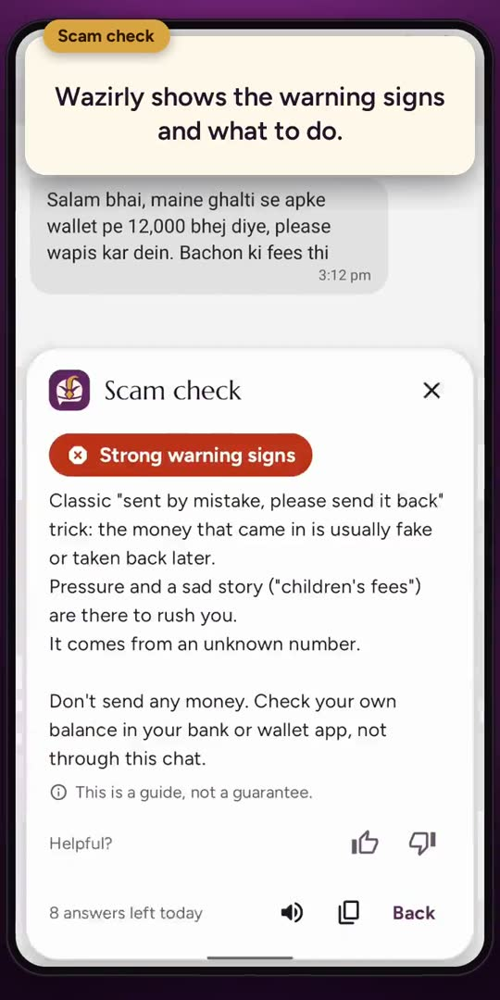
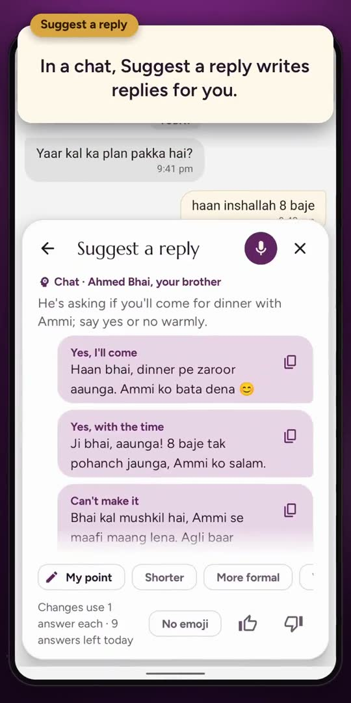
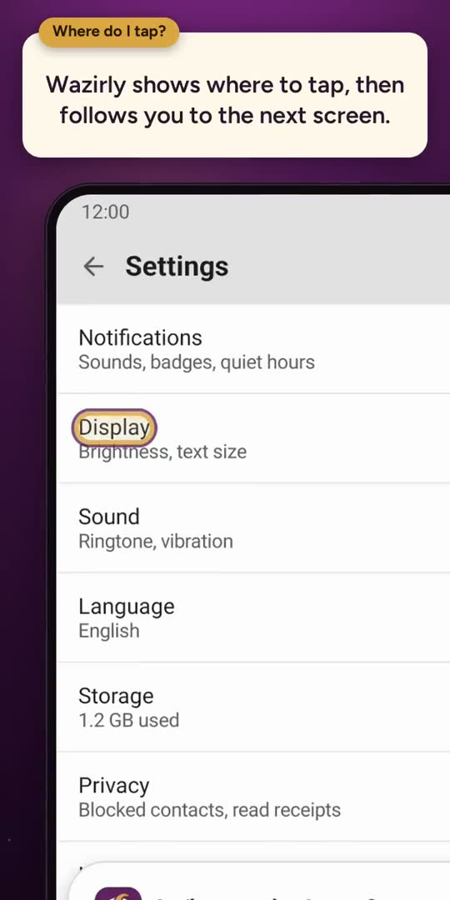
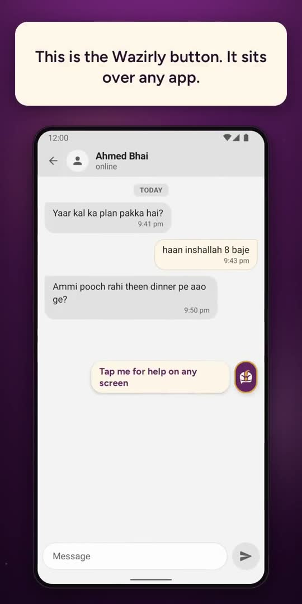

Early access on Google Play
Stuck on your phone? Tap the Wazirly button.
Wazirly sits over any app. Tap it and it reads what's on your screen, then helps in plain words: it checks if a message is a scam, writes your reply, and shows you exactly where to tap.
Free to start: 10 answers a day, no card. For Android 8.0 or newer.
Phones keep getting harder. Scams keep getting better.
Scam texts look real, apps move their buttons, and long letters hide the one line that matters. Most of us end up guessing, or asking someone, again.
$15.9 billion
lost to fraud reported by Americans in 2025, a record, and text messages were the most common way in.
Source: US Federal Trade Commission
£576 million
lost in the UK in 2025 to scams that trick people into sending money themselves.
1 in 3
UK adults helped someone else get something done online last year, most often a parent.
Source: UK Department for Science, Innovation and Technology, 2026
In Canada, people reported a record C$704 million lost to fraud in 2025 (Canadian Anti-Fraud Centre), and in Australia A$2.18 billion (National Anti-Scam Centre).
One button. The help you need, right where you're stuck.
No copying, no screenshots, no switching apps. Wazirly works over your chats, texts, emails, shopping and the other apps you use every day.

Scam check
Not sure about a message? Ask before you tap.
Wazirly reads the text, email or post on your screen and tells you how risky it looks, the warning signs it found, and what to do next. It works in WhatsApp, Messages, email and social apps, where spam filters stop.
- Plain words: strong warning signs, some, or none it can see
- The exact phrases that gave it away, like "sent by mistake" or "your account is locked"
- One clear next step: don't pay, check with your bank, block, report

Suggest a reply
Three replies in your own voice. Pick one, send.
Wazirly reads the chat, works out what's being asked, and writes three different replies: yes, no, or something in between. Copy the one you like and paste it in.
- Make it shorter, warmer or more formal with one tap
- Tell it your point in a few words, and it writes the message
- Follows the chat you're in: family, friends, work or a seller

Where do I tap?
Say what you want to do. Wazirly shows the way, one tap at a time.
"Turn on dark mode", "cancel my subscription", "find my order". Wazirly puts a ring around the next thing to tap, then follows you to the next screen until it's done.
- Type it or just say it
- You stay in control: Wazirly shows the way and never taps for you
- Lost? It notices and helps you back on track
Summary
A long email, a busy group chat, a confusing bill: get the key points, the deadline and the amount first.
Translate
Read what's on your screen in English, اردو or Roman Urdu, without leaving the app you're in.
Ask anything
"What does this mean?" "Is this the right form?" Ask about what's on the screen, or have it describe the pictures.
How it works
Set it up once. After that, help is one tap away in every app.
-
Turn on Wazirly
Install it from Google Play and tap Start. Android asks you to let Wazirly show its button over your apps and see your screen when you ask for help.
-
Tap the button on any screen
It floats at the edge of your screen. Move it wherever you like, or hold it to speak.
-
Pick what you need
Scam check, a reply, where to tap, a summary. The answer comes in seconds, in plain words.
Set it up once for someone you love.
"Is this text from the bank real?" "How do I send a photo?" "Where's the button gone?"
If you're the person everyone calls for phone help, install Wazirly on their phone and turn it on together. They get a calm second opinion on every suspicious message and patient, step-by-step help, any time of day, without waiting for you to pick up.
Join the waitlist for them
Private by design
Your screen is personal. Wazirly is built to read as little as it can, only when you ask.
Only when you tap
Wazirly reads your screen only when you tap its button, after Android's own permission prompt. It doesn't watch in the background.
Pictures only with your OK
Most answers use just the words on your screen. When a picture would help, Wazirly asks first.
Never sold, no ads, no training
Your requests aren't sold or used for ads, and the AI provider isn't allowed to train its models on them.
Delete it any time
One tap in the app deletes your data. You don't need an account to use Wazirly.
Android hides Wazirly in your phone's own Settings and on some banking and password screens, to keep you safe. The full details are in the privacy policy.
Start free. Upgrade when you need more.
Every feature is in the free plan. Premium is for people who use Wazirly all day.
Free
Free, no card needed
- 10 answers a day
- Up to 3 of them can look at pictures on your screen
- Scam check, replies, where to tap, summary, translate and more
Premium
Monthly or yearly, through Google Play
- 50 answers a day
- Up to 10 of them can look at pictures on your screen
- Answers can search the web for current facts and an app's real menus
Early-access bonus: while Wazirly is in testing, testers get Premium free.
Join the waitlist
Wazirly is in early access on Google Play. Leave your email and we'll send your invite, or tell you the moment it's ready for your phone.
- Early access to the Android app, with Premium free while it's in testing
- On iPhone? Tell us below. iPhone doesn't let apps help over other apps yet, and you'll be first to hear when Wazirly works there
- One or two emails, no spam, unsubscribe any time
Already invited? Get Wazirly on Google Play
Questions
What exactly is Wazirly?
An Android app that puts a small button over every app on your phone. When you're stuck, tap it: Wazirly reads what's on your screen and helps with what's in front of you, from a suspicious text to a reply you don't know how to write.
Is it free?
Yes. The free plan gives you 10 answers a day with every feature, and no card is needed. Premium gives you 50 a day and answers that can search the web. While Wazirly is in testing, testers get Premium free.
Which phones does it work on?
Android phones with Android 8.0 or newer, which is nearly every Android phone in use today, not just the latest models. It isn't available on iPhone yet, because iPhone doesn't let apps show a button over other apps. Join the waitlist and choose iPhone to hear first if that changes.
Does it work in every app?
In almost every app: chats, texts, email, social media, shopping, government and health sites. For your safety, Android hides it in your phone's own Settings app and on some banking and password screens.
What does Wazirly see, and who else does?
Only the screen you're on, and only when you tap its button. To write the answer, the words on that screen go to Wazirly's server and an AI model. They aren't sold, used for ads, or used to train AI. Pictures are sent only if you agree. The privacy policy has every detail.
Is the scam check always right?
No checker is. Wazirly tells you the warning signs it can see and what to do, as a second opinion. If you're unsure, don't pay or share codes, and check with your bank or the company using a number you already trust.
Which languages does it speak?
Wazirly's screens and answers come in English, Urdu (اردو) and Roman Urdu. It can read and translate what's on your screen in many more.
How do I get it now?
Join the waitlist above. We'll email your invite to the Google Play early-access test. Once you've accepted it, you install Wazirly from Google Play like any other app.
Next time you're stuck, tap the Wazirly button.
Help with anything on your screen, in any app.
Join the waitlist